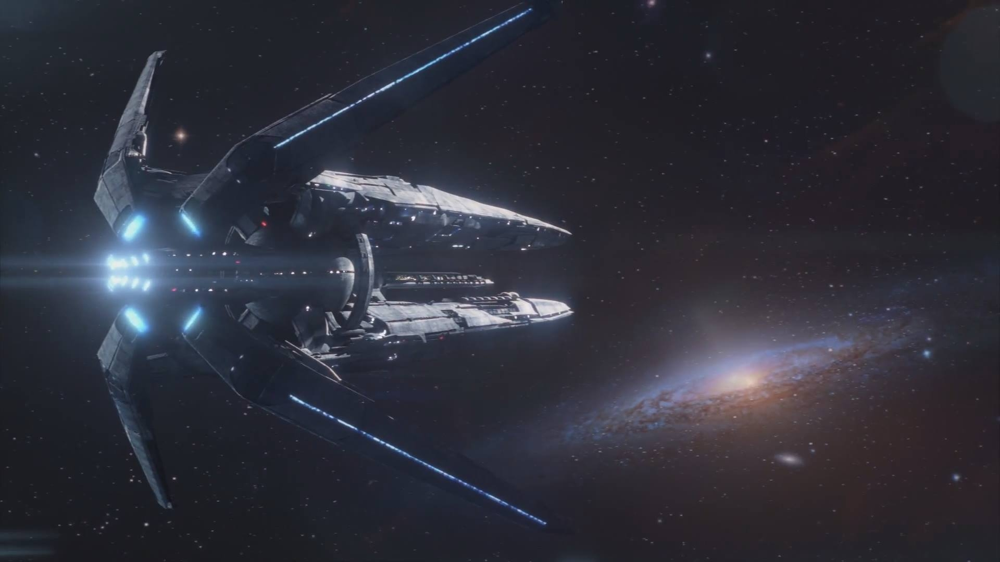

What is Daedalus?
Daedalus is a corporation that will be the architect of humanity's bright future. Your problems will be the coronet of our solutions. We are working relentlessly for improving AI and fusion energy technologies, creating reliable space travel techniques and opening endless possibilites for robotics in future. All this is fueled by the trust and vision of our contributors and investors. Our main projects are: ARINNA, TALOS and ATLAS.
Project Arinna
Taking its name from the Hittite Goddess of Sun, the goal of Project Arinna is to create the sun in Earth: achieving stable fusion. After the creation of an efficient fusion reactor, future of the power generation will completely be changed. For more information: Project Arinna
Project Talos
Talos was a mythical giant automaton made of bronze to protect Europa in Crete form pirates and invaders. Our goal for starting this project is creating intelligent robots that can protect us from hazards. The ultimate task of this project is to merge human with robot to create a new lifeform that can protect its own and others with its intelligence, swiftness and durability. For more information: Project Talos
Project Atlas
As the mythological titan Atlas carries the sky on his shoulders, our grand endeavor aims to make spaceflight common by reducing the duration of space journeys. We will use any kind of technology such as hall drives, EM drives, fusion rockets etc. to reach the end of the solar system in not years, not months but mere weeks and trigger a new wave of exploration era for humankind. For more information: Project Atlas
